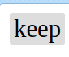
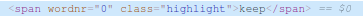
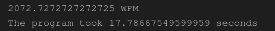
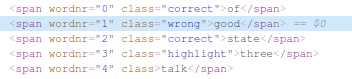
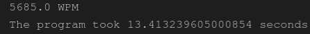
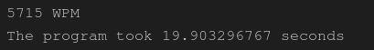

Ahmad Hamze
November 4, 2021
Puppeteer vs Selenium
This blog is for learning purposes only, you can find the complete code on my Github go there to find the instructions necessary to run the code.
Introduction
In a previous
blog
I created a selenium bot that performs the
10fastfingers typing speed, it
scored 960 WPM.
This code was far from perfect, I did it quickly without taking into
consideration the best performance that could be achieved. This blog is
aimed at enhancing the Selenium code and comparing it with another
automation library called Puppeteer.
The comparison I'm about to show only scratches the surface of what both libraries can do, do not judge a certain library by what you're going to see, there are many different criteria that I am not taking into consideration.
The Enhanced Selenium Code
I will go over the enhancements made to the old code, if you need to check the old code here's the link.
Waiting for the highlight class
The old approach I took to wait for all the words to appear on the page was to wait until the page completes loading, it turns out there is a much better approach.
The current word you're supposed to type is always highlighted
This is done by applying a "highlight" class to the word
We can wait for this class to appear instead of waiting for the whole page to load. We've already seen how to do similar things in the old code
WebDriverWait(driver, 10).until(
EC.presence_of_element_located((By.CLASS_NAME, "highlight"))
)
Regex Instead of Requests-html
In the old code, I used a scraping library called
requests-html
to parse the HTML retrieved from the page.
There are faster alternatives, simply search for the words inside the
retrieved HTML using regex.
spans = re.findall(r"")[1], spans)
words = list(words)
Remove Selenium Space Key
In the old code, I used the built-in Keys.SPACE after typing each word, which types the space bar. A faster alternative is to simply concatenate each word with a space.
for word in words:
inputField.send_keys(word + " ")
I tried using a list comprehension instead of a for loop to make it faster but I couldn't notice a difference.
That's all the improvements made to the Selenium code, now we can run the program and see the results, here is a video showing how fast the typing has become.
Just like before, the code computes the typing speed, I also added the complete time taken to open, navigate, and close the browser, here's the result.

That's 2072 WPM! More than double the score of the old code (960 WPM), and
the whole program took less than 18 seconds.
This is a lucky run, most of the runs score a bit more than 1700 WPM, and
take around 22 seconds, this is related to the hardware and the internet
speed that I am using.
The major contributor to this enhancement is concatenating a space to the
end of each word, instead of using the provided space key from Selenium.
This simple change made the biggest difference.
Puppeteer
Now it's the time to do the same thing with Puppeteer.
To avoid an unnecessary installation of another chrome browser, I used the
puppeteer-core
library which is identical to puppeteer, however, it doesn't come with a
default Chrome browser.
You have to provide the location of your Chrome browser to puppeteer-core
To be able to launch it.
Unlike Selenium, Puppeteer is built for chrome (it doesn't work on other
browsers yet), so you don't need a driver to launch the browser.
Code
The default Configuration of Puppeteer does not open a browser, we can change that by setting the "headless" property to false.
const browser = await puppeteer.launch({
executablePath: "/usr/bin/google-chrome",
headless: false,
// This line fixes the viewport of the browser
defaultViewport: null,
});
The rest of the code is identical to Selenium, the only difference is when
selecting the typing input.
10fastfingers opens with the cursor set on the typing input, so we don't
need to select it if we can send the words directly. This can be done with
Puppeteer
for (word of words) {
await page.keyboard.type(word + " ");
}
Now, let's run the code and see how fast it is
You can clearly see that Puppeteer types slower than Selenium, here's the result

624 WPM, and 50 seconds to complete, this is much slower than Selenium.
Headless mode
The final comparison I tried is to run both programs on headless mode.
As mentioned before, the default behavior of Puppeteer is headless, so to
enable it again just remove
headless: false from the code.
When it comes to Selenium you have to add these lines
from selenium.webdriver.chrome.options import Options
options = Options()
options.headless = True
# This line replaces the old driver
driver = webdriver.Chrome(service=serv, options=options)
Obviously, you're not going to see the words getting typed anymore. No
other changes are made to the code so everything should be working
properly.
However, if you're like me and want visual proof that this is still
working fine, there is a way to do that. In 10fastfingers typing a correct
word changes its color to green, otherwise, it's changed to red.
Inspecting the words again, it turns out a class of "correct" is added to the word when it's typed correctly, otherwise the class "wrong" is added.

Therefore, to make sure everything is still fine we can simply print the
HTML of the page after the program ends, we should see the "correct" class
added to all words.
Indeed, that's what happens
Here is the result of Selenium
And the result of Puppeteer

The typing speed in headless mode is much more significant!
Selenium jumped to 5685 WPM and surprisingly Puppeteer has the advantage
at 5715 WPM, still, the overall time taken by Puppeteer is more than that
of Selenium (13 seconds for Selenium and 20 for Puppeteer).
Here's a comparison table
| Criteria | Selenium | Puppeteer |
|---|---|---|
| Typing Speed (WPM) | 2072 | 624 |
| Total Runtime (seconds) | 18 | 50 |
| Typing Speed Headless Mode (WPM) | 5685 | 5715 |
| Total Runtime Headless Mode (seconds) | 13 | 20 |
Conclusion
It seems that Selenium wins this round, but Puppeteer has much more to offer, it's able to modify responses using the Chrome DevTools Protocol (CDP), I am yet to discover this technology.